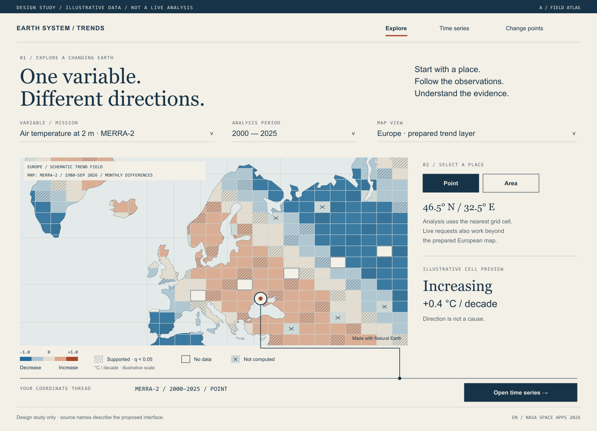
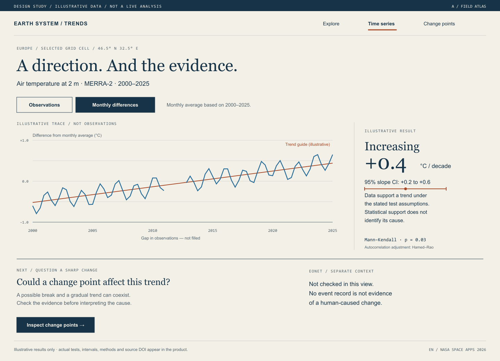
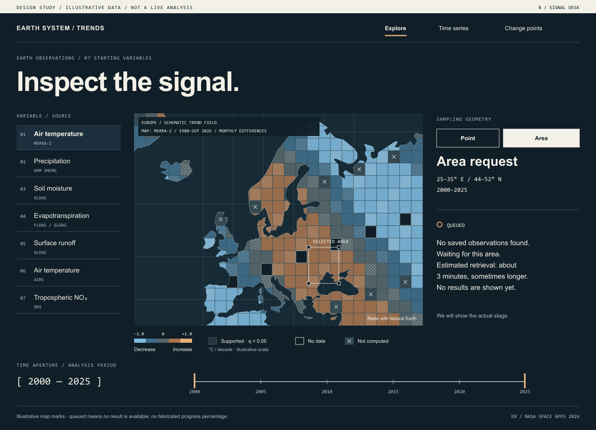
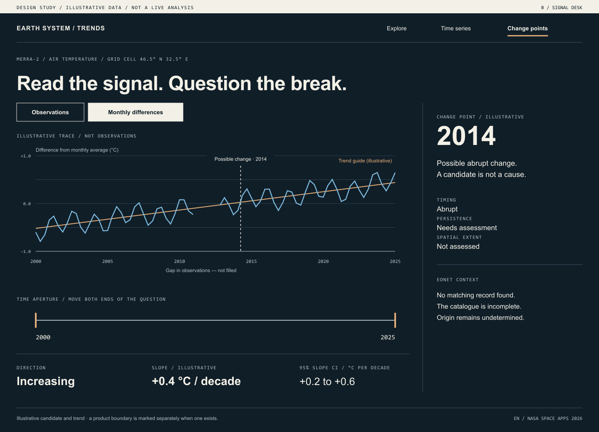
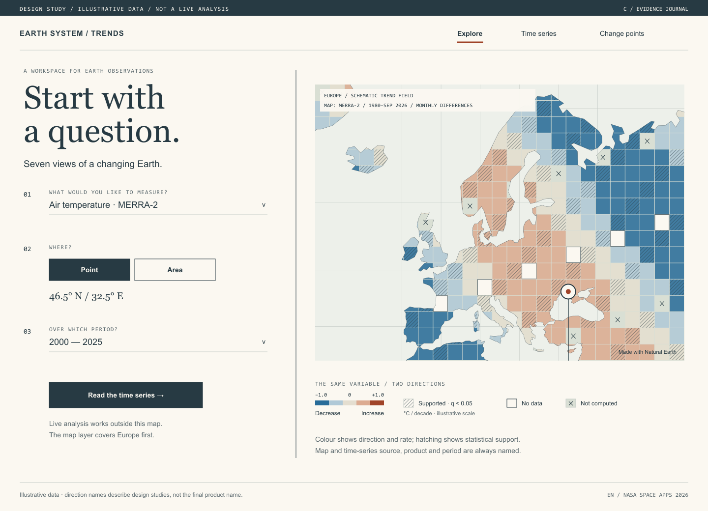
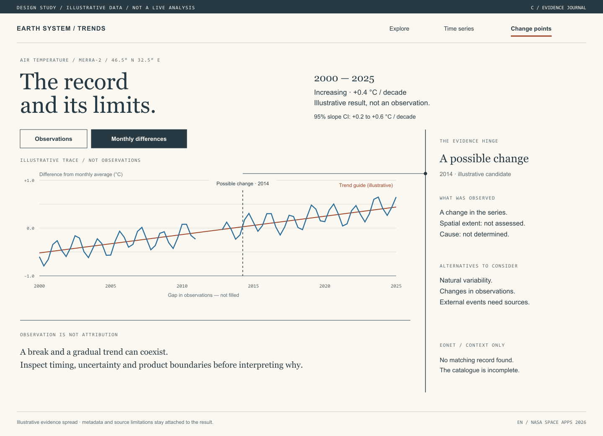
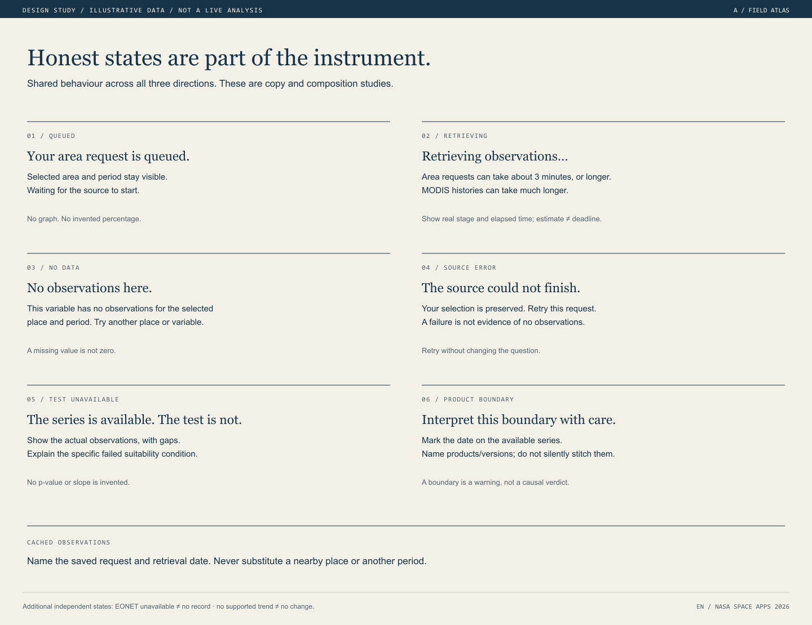

NASA Space Apps 2026 / team review / task 004
Three ways to read a changing Earth.
Choose a visual direction. Each study shows the same agreed scope: seven starting variables, a European trend map, live point and area requests, a time series and evidence of possible change points. Direction names are not proposed product names.
A / Field Atlas
A scientific atlas with a coordinate thread: the chosen place stays connected to the observations and their limits.





B / Signal Desk
A restrained dark instrument. A bracketed time aperture makes the period part of the question, while an area request honestly waits for its source.





C / Evidence Journal
An editorial spread. An evidence hinge connects a possible change in the record to observations, alternatives and the limits of attribution.





Shared states
Waiting, no observations, source failure, unavailable tests and product boundaries remain distinct. Cached observations retain the identity and retrieval date of their actual request.
